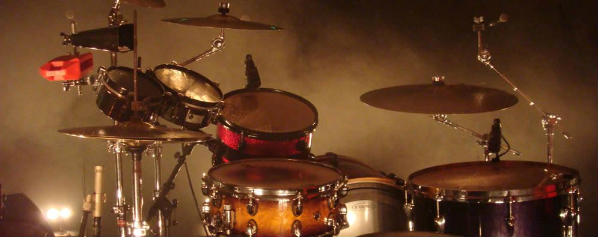

Créée en 2007, CONKRETE LIVE a su imposer son style. Répondant à des attentes toujours plus pointues des organisateurs de spectacles, d’événements et de manifestations, son équipe allie un professionnalisme indiscutable à une grande capacité d’écoute et d’adaptation. Maîtrisant techniques et technologies les plus récentes en matière de son, lumière et vidéo, leurs prestations leur ont valu un retour sur image de premier plan. Des concerts grand public aux spectacles de plein air, notre exigence est toujours la même répondant aussi aux attentes d’organisateurs plus modestes. De la sonorisation d’un artiste de renom à une fête de famille, la préparation sera toujours soignée. Un événement repose sur une atmosphère et une émotion qui le rendent inoubliable. Nous sommes à votre écoute pour apporter à votre manifestation sa configuration optimale avec le budget le plus étudié.
Nous avons sélectionné pour vous le matériel issu des dernières innovations technologiques, susceptible de répondre à vos besoins en sonorisation, éclairage, vidéo, structure et électricité. La garantie de notre sérieux, c’est un parc de matériel entretenu, révisé et renouvelé régulièrement.
CONKRETE LIVE vous accueille du lundi au vendredi de 9h00 à 12h00 et de 14h00 à 19h00, ainsi que le samedi matin sur rendez-vous.
Adresse mail: k.ramos@conkrete.com
Téléphone: 0698162229
adresse: 11 avenue Archimède Zi Pessac Bersol Parc Archimede 33600 PESSAC
Nom ou Raison sociale : Conkrete Live
N° Registre Commerce: 497910588
Mentions RCS: Bordeaux
Adresse siège social: 11 avenue Archimède Zi Pessac Bersol Parc Archimede 33600 PESSAC
N° SIRET de l’établissement: 497910588 000 35
N° d'assujetissement à la TVA: FR 64 497910588
Directeur de rédaction et de publication: CONKRETE LIVE
Site heberge par : X
Créée en 2007, CONKRETE LIVE a su imposer son style. Répondant à des attentes toujours plus pointues des organisateurs de spectacles, d’événements et de manifestations, son équipe allie un professionnalisme indiscutable à une grande capacité d’écoute et d’adaptation. Maîtrisant techniques et technologies les plus récentes en matière de son, lumière et vidéo, leurs prestations leur ont valu un retour sur image de premier plan. Des concerts grand public aux spectacles de plein air, notre exigence est toujours la même répondant aussi aux attentes d’organisateurs plus modestes. De la sonorisation d’un artiste de renom à une fête de famille, la préparation sera toujours soignée. Un événement repose sur une atmosphère et une émotion qui le rendent inoubliable. Nous sommes à votre écoute pour apporter à votre manifestation sa configuration optimale avec le budget le plus étudié.
Nous avons sélectionné pour vous le matériel issu des dernières innovations technologiques, susceptible de répondre à vos besoins en sonorisation, éclairage, vidéo, structure et électricité. La garantie de notre sérieux, c’est un parc de matériel entretenu, révisé et renouvelé régulièrement. Prestation Grâce à l’expérience et le professionnalisme de nos équipes techniques, nous vous accompagnerons dans vos réalisations. Location Pour vos concerts, conférences, salons ou soirées privées, nous vous proposons notre matériel en location de courte ou longue durée. Vente / Intégration Selon vos besoins, nous vous conseillons dans vos achats de matériel, neuf ou d’occasion, ainsi que de consommables divers. De plus, nous étudierons vos projets d’intégration d’équipements de la conception à la réalisation.
CONKRETE LIVE vous accueille du lundi au vendredi de 9h00 à 12h00 et de 14h00 à 19h00, ainsi que le samedi matin sur rendez-vous. Gérant et chargé d’affaires : Krystof MEREUZE : 06 98 16 22 29 / k.ramos@conkrete.com Technicien logistique : Alexandre DA SILVA : 06 33 52 77 41 / a.dasilva@conkrete.com Le bureau : Coordonées GPS : Latitude : 44°78’ N 11 avenue Archimède Cellule 7 Longitude: -0°64’ W ZI Pessac Bersol 1 33600 Pessac Tel : 09 81 72 04 67 E-mail : live@conkrete.com